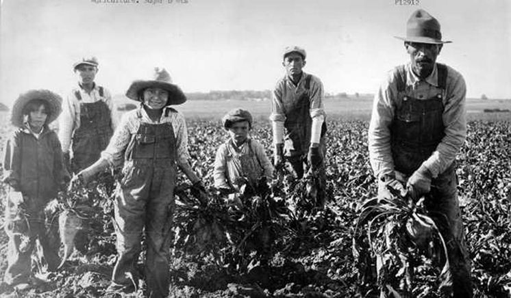

History textbooks don’t say much about the experience of Mexicans and Mexican Americans in the United States between the years of 1848, when the Mexican-American war ended, and 1942, after WWII began and Mexicans were brought in as contract workers through the Bracero Program.
This absence calls for you to think like a historian. We know that tens of thousands of Mexicans and Mexican Americans lived in the United States after the Mexican War, but we don’t have a very clear sense of what life was like.
| Reading: Railroad Labor | Reading: “Corrido Pensilvanio” | Reading: Lynching |
|---|---|---|
|
Sam David Felix Raymond Calvin Danica Frank Ashley Kathy |
Alvin Yujeiry Holiverio Leslie Vanessa Stephanie Nicole Estephany Eliza Adahness Iraima |
Fatoumata Andrew Jennifer O. Ali Armani Nicholas Jennifer A. Atom Taylor |
I left Mexico in 1919, when there was good work in Texas. My first job was digging ditches. The good work lasted about a year and a half. Then I was laid off. So were many, many Mexicans. Some of them had worked there a long time but they kept the Americans. It made some of us mad but what could we do? Nothing.
I went North to Detroit in hope things would be better. Then to Pittsburgh. But they were worse. In 1923, I came to Chicago and worked for the steel mills. I like the work there. It pays well. It is very hot and heavy but I could stand that. Then I was laid off. I did not work for three months and I was desperate. Finally I landed here. I have been here four years.
The track work does not pay so well but it is steady. Out here we get our coal and water free. That makes it very nice in the winter. In the summer we have ice and that is a great luxury. We have no rent bill to pay and that makes it very much better than in town. There is always plenty of fresh air and sunshine and the children like it here because they can play in the open country.
We get La Prensa here and when I finish reading it I pass it to someone else. One man gets a paper from Los Angeles in California. That is a pretty place and I have often heard so much about it. There are many Mexicans there and we hear from them very often. Many of the people around here would like to go there. They say the people down there are so very happy and it is not cold like it is here.
According to this document, what was life like for Mexicans and Mexican-Americans during the 1920s?
Where in the U.S. did Mexicans live?
What type of work did they find?
How did they feel about their work?
El 28 de Abril
A las seis de la manana
Salimos en un enganche
Para el estado de Pensilvania
Mi chinita me decia
Yo me voy en esa agenciaPara
lavarle su ropa
Para darle su asistencia.
El enganchista me dijo,
No lleves a tu familia
Para no pasar trabajo
Es en el estado de West Virginia.
Para que sepas que te quiero
Me dejas en Fort Worth
Y cuando ya estes trabajando
Me escribes de donde estes.
Adios Fort Worth y Dallas,
Por no de mucha importancia
Yo me voy para Pensilvania
Por no andar en la vagancia.
Al llegar al steel mill worque,
Que vemos la locomotora
Y salimos corriendo
Ochenta millas por hora!
Cuando llegamos alla
Y del tren nos bajamos,
Preguntan las italianas,
De donde vienen, Mexicanos?
Responden los Mexicanos
Los que ya saben “inglear”
Venimos en un engache
Del pueblo de Fort Worth
On the 28th of April
At six o’clock in the morning
We set out under contract
For the state of Pennsylvania.
My little sweetheart said to me,
“I’m going into that officeAnd
say I’ll wash your clothes
And take care of you.”
The contractor said to me,
“Don’t take your family
Or you’ll pass up this job
It’s in the state of West Virginia.”
“So you’ll know that I love you,
When you leave me in Fort Worth,
And you have started working,
Write me from where you are.
Goodbye, Fort Worth and Dallas,
You’re not much to me now,
I’m going to Pennsylvania
To be a vagrant no more.
When we got to the steel works
We saw the locomotive
And we came running
At eighty miles an hour!
When we arrived there
And got off the train
The Italian girls asked us,
“Where do you come from, Mexicans?”
The Mexicans reply,
Those who know how “to English,”
“We come out under contract
From the town of Forth Worth.”
According to this document, what was life like for Mexicans and Mexican-Americans during the 1920s?
Where in the U.S. did Mexicans live?
What type of work did they find?
How did they feel about their work?
In September 1911, four hundred Mexican activists assembled in Laredo, Texas. The delegates denounced the brutal oppression of their people that had continued unchecked since the signing of the Treaty of Guadalupe Hidalgo (1848). It was agreed to establish a new civil rights organization with the purpose of protecting its members against white injustice. La Grán Liga Mexicanista de Benefiencia y Protección intended to attract the support of wealthy philanthropists and the liberal press in order "to strike back at the hatred of some bad sons of Uncle Sam who believe themselves better than the Mexicans because of the magic that surrounds the word white".
In 1929, Mexicans founded another defense agency, the League of United Latin American Citizens (LULAC). LULAC organizers experienced difficulty mobilizing Mexican Americans, especially in small towns and remote rural areas. The only way to prevent further lynchings was for Mexicans to rally in protest. Yet it was the very fear of mob violence that frightened [many] into silence.
According to this document, what was life like for Mexicans and Mexican-Americans during the 1920s?
How did the population change?
How did Mexicans respond to violence?
How is the history of Mexican immigration similar to Africa American migration? How is it different?
Did anything about the history of Mexican American labor surprise you? Why?
What additional questions do you have about labor and race in the early 20th century?